REFILL STATION / OPERATOR MANUAL
리필 스테이션
사용 및 관리 설명서
기기 터치 화면과 Web 관리 화면의 조작 방법을 안내합니다.
스크린샷의 측정값과 연결 정보는 예시입니다. 이미지를 누르면 원본 크기로 열립니다.
기기 사용 시작하기
전원을 켜면 시작 화면이 열립니다. 고객이 이용할 때는 디스펜스 화면을 사용합니다. 기기 버전은 홈 → 관리 → 시스템 화면 아래의 제품 정보에서 확인합니다.
관리 화면으로 들어가기
- 홈으로 이동합니다.
디스펜스 화면 오른쪽 위 모서리를 3초 안에 5번 탭합니다. 페이지가 잠겨 있다면 비밀번호를 입력합니다.
- 홈의 관리를 누릅니다.
관리자 잠금이 켜져 있다면 설치 시 지정한 관리자 비밀번호를 입력합니다.
- 왼쪽 목차에서 설정 항목을 선택합니다.
처음에는 잔량이 열립니다.

홈 화면의 기능
| 항목 | 기능 |
|---|---|
| 리필 시작 | 작동 시간 제한 없이 펌프를 가동합니다. |
| 펌프 정지 | 작동 중인 펌프를 멈춥니다. |
| 프리셋 | 프리셋 설정에 미리 저장한 양을 선택해 리필합니다. |
| 수동 | 직접 입력한 양으로 리필합니다. |
| 디스펜스 | 고객용 리필 화면을 엽니다. |
| 예상 리필량 | 보정값으로 계산한 현재 또는 직전 리필량입니다. |
| 누적 리필 | 리필로 사용한 양의 합계입니다. |
| 재부팅 | 기기를 다시 시작합니다. |
재부팅 전에는 진행 중인 리필을 끝내고 펌프 정지를 확인합니다.
리필 진행 화면을 탭하면 일시정지합니다. 계속하려면 리필재개를 누릅니다. 이번 리필을 끝내려면 빨간 정지를 누릅니다. 펌프 오류 화면에서는 표시된 오류를 확인하고 이전으로 돌아갑니다.
매장 운영 순서
영업 시작 전
- 제품명, 말통의 내용물, 사용 기한과 제품 상태를 확인합니다.
- 튜브 꺾임, 느슨한 연결, 노즐 막힘과 새는 곳이 없는지 확인합니다.
- 실제 말통 상태와 예상 잔량을 대조합니다. 새 말통은 말통 교체, 부분 사용한 말통은 잔량 보정으로 반영합니다.
- 현재 사용할 보정과 고객에게 제공할 리필량을 확인합니다.
- 시험 리필로 실제 배출량과 펌프 정지를 확인합니다.
- 고객용 디스펜스 화면으로 돌아갑니다.
운영 중과 마감
잔량 표시는 보충 시점을 판단하는 참고값입니다. 실제 말통도 함께 확인하고, 공기가 섞이거나 토출이 불규칙하면 고객 사용을 멈춥니다.
마감할 때는 진행 중인 리필을 끝내고 펌프 정지를 확인한 뒤 노즐과 주변을 정리합니다.
제품, 튜브, 노즐, 펌프 또는 출력 설정을 바꿨다면 시험 리필로 양을 다시 확인하고 필요하면 재보정합니다.
캘리브레이션
홈 → 관리 → 캘리브레이션
실제 배출량을 측정해 목표량에 맞는 펌프 동작 시간을 정합니다. 측정 → 실측량 입력 → 저장 → 사용할 보정 선택 순서로 진행합니다.
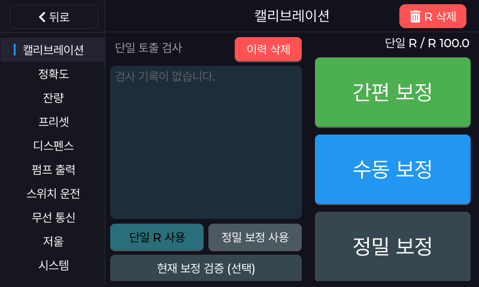
운영에 사용할 제품·튜브·노즐·출력 설정을 준비합니다. 배출량을 담을 수 있는 용기를 놓습니다. 빈 용기 값을 빼고 내용물만 측정합니다. 화면 단위가 g이면 무게, mL이면 부피를 측정합니다.
흐름이 고르고 공기가 섞이지 않는지 확인합니다. 매 회차 남은 방울까지 받은 뒤 실측량을 기록합니다.
| 방식 | 측정 방법 | 저장되는 보정 |
|---|---|---|
| 간편 보정 | 설정된 시간 동안 1회 배출. 기본 5초. | 단일 R |
| 수동 보정 | 직접 시작하고 원하는 양에서 측정 완료. | 단일 R |
| 정밀 보정 | 두 시간 × 각 3회, 총 6회 측정. | 정밀 보정값 |
R은 1초 동안 배출되는 양입니다.
간편 보정
- 측정 시간을 확인합니다.
관리 → 정확도 → 캘리브 시간에서 확인합니다. 기본값은 5초입니다.
- 용기를 놓고 간편 보정을 누릅니다.
펌프가 작동하고 남은 시간이 표시됩니다. 설정 시간이 끝나면 자동으로 멈춥니다.
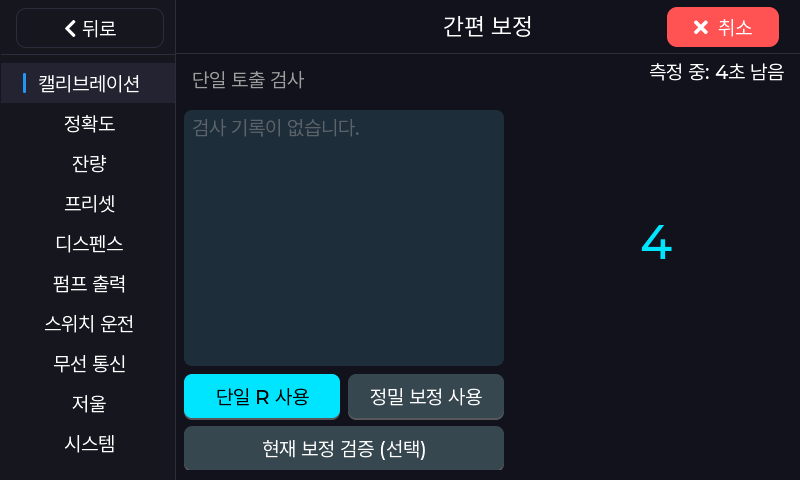
간편 보정 · 측정 중 - 실측량을 입력합니다.
남은 액체까지 받은 뒤 내용물만 측정합니다. 실측량을 입력하고 키패드의 저장을 누릅니다.
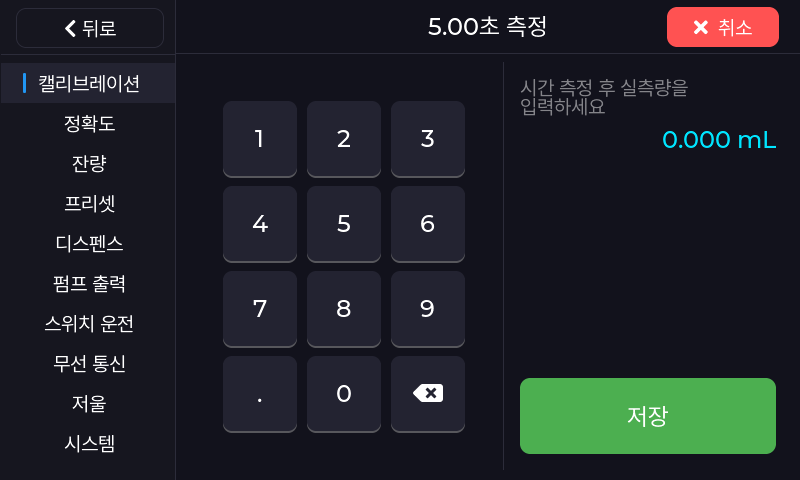
간편 보정 · 실측량 입력 - 보정값을 저장합니다.
제품·노즐 등 측정 조건을 적고 메모와 저장을 누릅니다. 메모를 생략하려면 메모 없이 저장을 누릅니다. 저장 결과를 확인합니다.
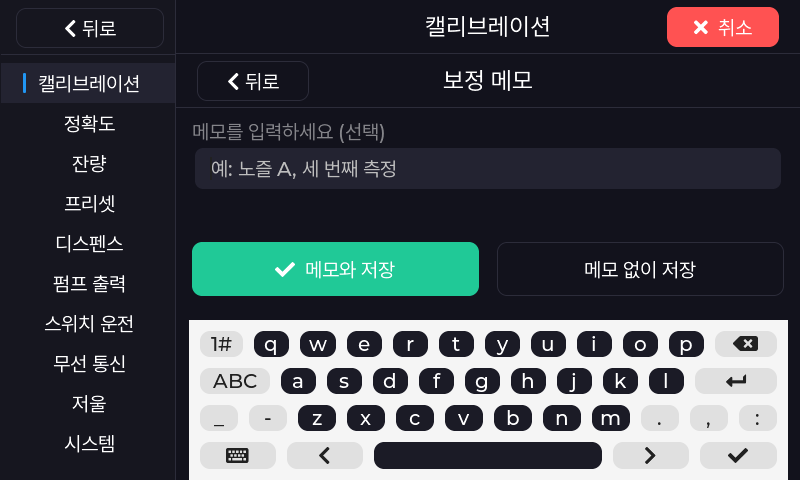
보정 메모와 저장 - 캘리브레이션 첫 화면으로 돌아갑니다.
현재 R과 기록을 확인합니다.
- 단일 R 사용을 누릅니다.
수동 보정
원하는 양에서 직접 측정을 끝내는 방식입니다.
- 용기를 놓고 수동 보정을 누릅니다.
펌프가 작동하며 경과 시간이 표시됩니다. 작업 중 자리를 지킵니다.
- 원하는 양에서 측정 완료를 누릅니다.
펌프가 멈춘 뒤 남은 액체까지 받습니다. 측정을 중단하려면 뒤로/취소를 사용합니다.
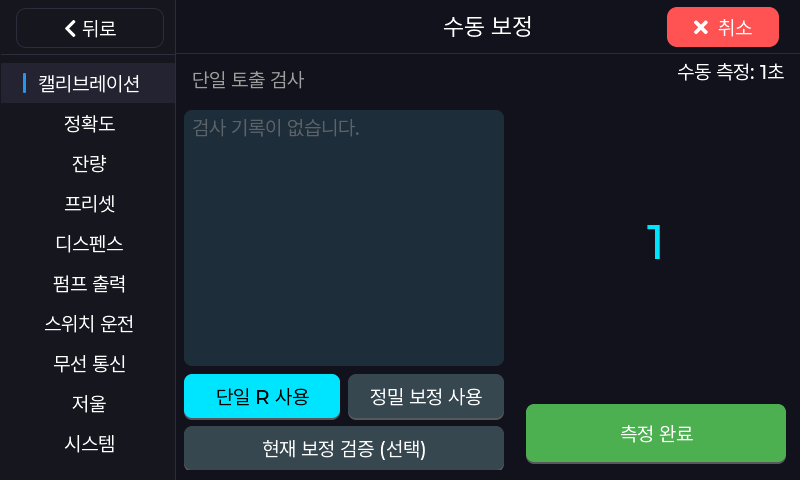
수동 보정 · 측정 중 - 실측량을 입력합니다.
내용물만 측정합니다. 실측량을 입력하고 키패드의 저장을 누릅니다.
- 메모를 입력합니다.
제품·노즐 등 측정 조건을 적습니다. 메모는 생략할 수 있습니다.
- 보정값을 저장합니다.
메모와 저장 또는 메모 없이 저장을 누릅니다. 저장 결과를 확인합니다.
- 캘리브레이션 첫 화면으로 돌아갑니다.
현재 R을 확인합니다. 간편·수동 보정은 같은 단일 R을 갱신합니다.
- 단일 R 사용을 누릅니다.
현재 사용할 보정이 단일 R인지 확인합니다.
정밀 보정 · 총 6회 측정
서로 다른 두 시간으로 각각 3회씩, 총 6회 측정합니다.
1/6 → 2/6 → 3/6
4/6 → 5/6 → 6/6
- 정밀 보정을 열고 프로파일을 선택합니다.
프로파일 1~4 중 이번 측정을 보관할 곳을 선택합니다. 기존 결과를 보관하려면 다른 프로파일을 고릅니다.
- 두 시간을 설정합니다.
시간 버튼을 눌러 서로 다른 두 시간을 입력합니다. 범위는 각각 0.1~60초입니다. 용기가 넘치지 않는 시간으로 정합니다. 액체·튜브 번호에는 측정 조건을 기록할 수 있습니다.
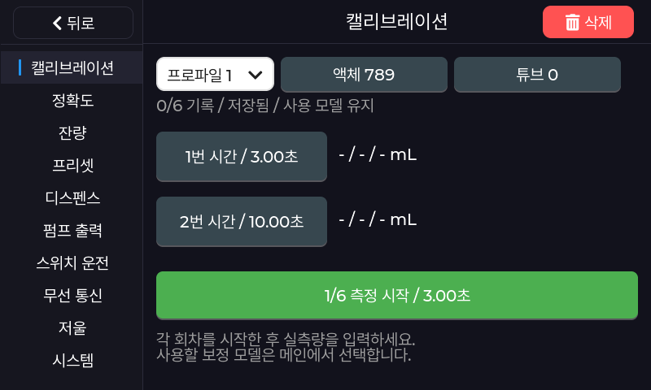
정밀 보정 · 측정 준비 - 용기를 준비합니다.
용기를 놓고 측정 시간을 확인합니다.
- 1/6 측정 시작을 누릅니다.
자동으로 멈출 때까지 기다립니다.
- 이번 회차의 실측량을 입력합니다.
남은 액체까지 받아 내용물만 측정합니다. 실측량을 입력하고 키패드의 저장을 누릅니다.
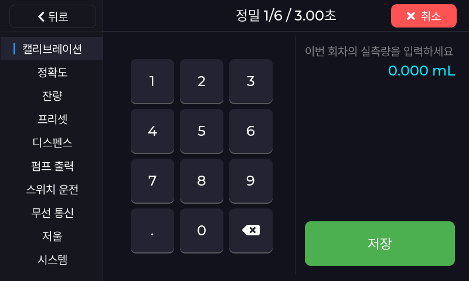
정밀 보정 · 회차별 입력 - 2/6부터 6/6까지 같은 방식으로 반복합니다.
매번 용기를 비우거나 새 용기를 준비하고, 각 회차를 직접 시작합니다. 4/6부터는 두 번째 시간을 사용합니다. 실측량은 매 회차 따로 입력합니다.
- 마지막 입력 후 저장 완료를 확인합니다.
6번째 실측량을 입력하고 저장을 누르면 정밀 보정값을 자동 계산·저장합니다. 6/6 기록과 저장됨 표시를 확인합니다. 추가 측정 시작은 새 6회 측정을 시작하는 동작입니다.
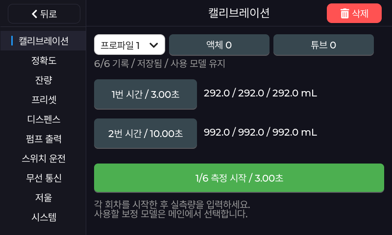
정밀 보정 · 6회 저장 완료 - 캘리브레이션 첫 화면으로 돌아갑니다.
사용할 프로파일을 확인합니다.
- 정밀 보정 사용을 누릅니다.
현재 사용할 보정이 정밀로 바뀌었는지 확인합니다.
측정 중 정지를 누르면 이번 회차만 취소됩니다. 이전 기록은 남습니다. 펌프 정지 후 같은 회차를 다시 측정합니다.
뒤로/취소, 측정 중 프로파일·시간 변경 또는 재부팅 후에는 6회를 처음부터 다시 측정합니다.
보정은 어떻게 계산하나요?
간편·수동 보정
정밀 보정
각 시간의 측정값 3개 중 가운데 값인 중앙값을 사용합니다. 두 시간 T1·T2의 중앙값을 M1·M2라고 하면 다음과 같습니다. 시간 단위는 초, 양은 화면의 g 또는 mL입니다.
b = M1 − a × T1
목표량에 필요한 시간 = (목표량 − b) ÷ a
예를 들어 3초의 측정값이 58·60·62 g, 10초의 측정값이 198·200·202 g이면 중앙값은 60 g과 200 g입니다. 이때 a = 20 g/s, b = 0 g입니다.
측정 범위 밖에서도 같은 계산식을 사용합니다.
사용할 보정 선택과 검증
저장 후 사용할 보정을 선택합니다. 캘리브레이션 첫 화면의 단일 R 사용 또는 정밀 보정 사용 버튼으로 선택합니다. 저장된 정밀값이 없는 프로파일은 정밀 보정 사용 버튼이 비활성화됩니다.
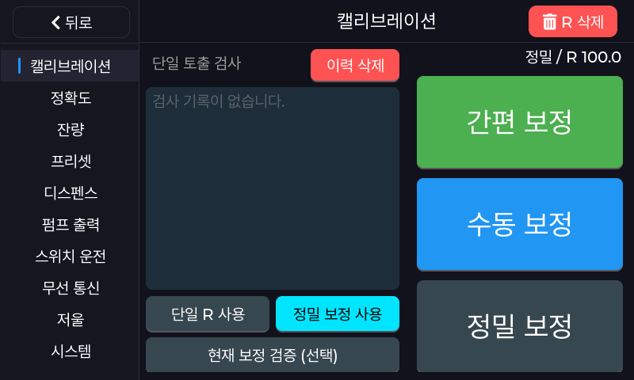
- 현재 보정 검증 (선택)을 엽니다.
검증할 보정을 선택합니다. 정밀 측정 중이면 완료하거나 취소한 뒤 검증 화면을 엽니다.
- 검증 시간을 선택합니다.
15초·30초·60초 버튼 또는 직접 입력을 사용합니다. 선택한 시간의 배출량을 담을 용기를 준비합니다.
- 검증 시작을 누릅니다.
자동 정지 후 남은 액체까지 받습니다.
- 실측량을 입력합니다.
내용물만 측정해 입력합니다. 예상량·실측량·차이·오차율을 비교합니다.
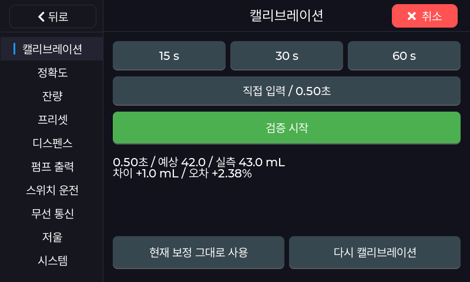
현재 보정 검증 · 결과 - 결과를 보고 다음 작업을 선택합니다.
운영을 계속하려면 현재 보정 그대로 사용을 누릅니다. 다시 측정하려면 다시 캘리브레이션을 누르고 보정 방식을 선택합니다.
차이는 실측량 − 예상량입니다. 양수면 예상보다 많이, 음수면 적게 나왔다는 뜻입니다. 검증 후에도 기존 보정값과 사용 선택은 유지됩니다. 결과를 보고 재보정 여부를 결정합니다.
디스펜스 화면에서 실제 판매할 작은 양과 큰 양을 시험 리필합니다. 이때 미세 조정까지 반영된 실제 배출량을 확인합니다.
기록·프로파일·삭제
| 동작 | 결과 |
|---|---|
| 단일 토출 검사 → 사용 | 해당 기록의 R을 현재 단일 R로 복원합니다. 리필에 사용하려면 단일 R 사용을 선택합니다. |
| 첫 화면 → R 삭제 | 확인창 승인 후 현재 단일 R만 지웁니다. |
| 단일 토출 검사 → 이력 삭제 | 확인창 승인 후 단일 보정 이력 목록만 지웁니다. 현재 단일 R은 유지됩니다. |
| 프로파일 선택 | 조회·측정할 정밀 프로파일을 바꿉니다. 리필에 사용할 보정은 정밀 보정 사용으로 선택합니다. |
| 정밀 상세 → 삭제 | 선택한 프로파일의 정밀값을 확인창 없이 즉시 삭제합니다. 사용 중인 정밀값을 삭제하면 단일 R로 전환됩니다. |
정밀값 삭제 후 단일 R도 없다면 고객용 운영을 재개하기 전에 보정부터 수행합니다.
Web에서 보정하기
Web 관리 → 보정
로그인 후 운영에 사용할 제품·튜브·노즐과 용기를 준비합니다. 빈 용기 값을 제외한 실측량을 화면 단위(g 또는 mL)로 입력합니다.
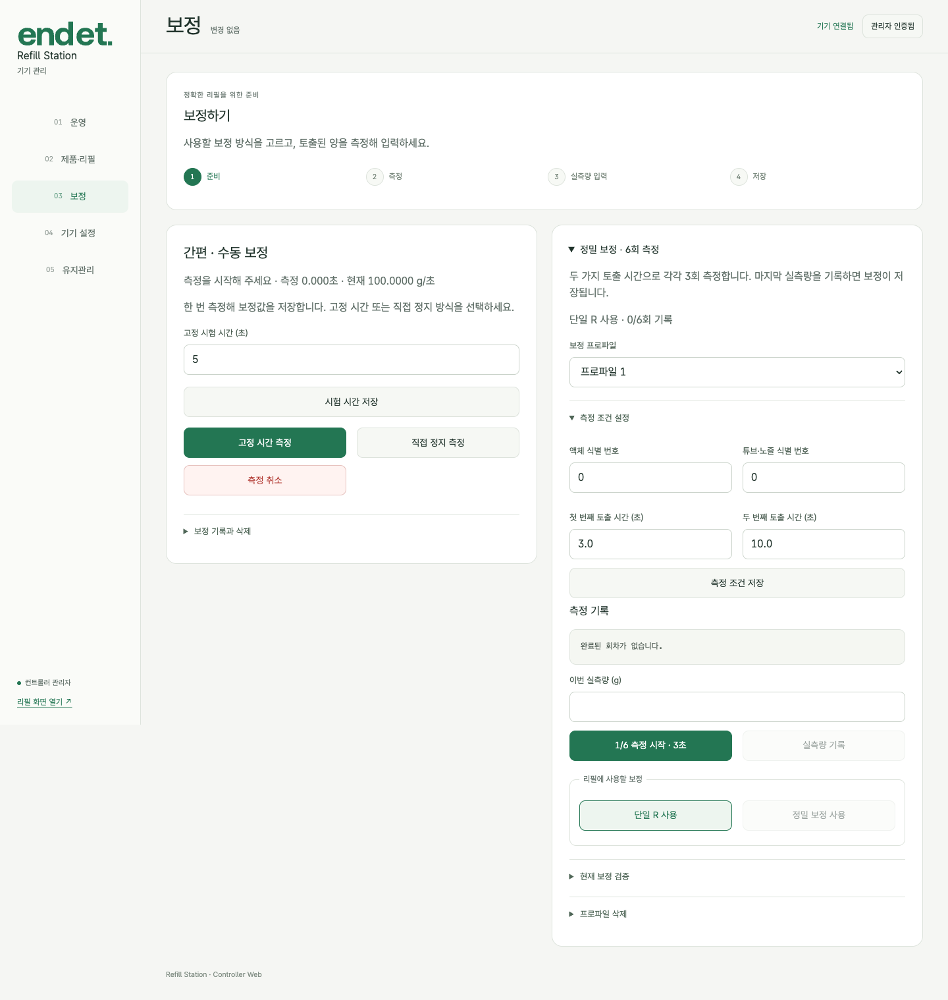
간편 보정
- 시험 시간을 저장합니다.
고정 시험 시간 (초)을 입력하고 시험 시간 저장을 누릅니다.
- 용기를 놓습니다.
설정한 시간의 배출량을 담을 수 있는지 확인합니다.
- 고정 시간 측정을 누릅니다.
설정 시간이 지나면 자동으로 멈춥니다. 중단하려면 측정 취소를 누릅니다.
- 실측량을 입력합니다.
남은 액체까지 받아 내용물만 측정합니다. 실측량과 필요한 측정 메모를 입력합니다.
- 보정값 계산 · 저장을 누릅니다.
저장 결과와 현재 R을 확인합니다.
- 단일 R 사용을 선택합니다.
정밀 보정 · 6회 측정 → 리필에 사용할 보정 → 단일 R 사용을 누릅니다.
수동 보정
- 용기를 놓습니다.
배출량을 담을 수 있는 용기를 준비합니다.
- 직접 정지 측정을 누릅니다.
작업 중 자리를 지킵니다.
- 원하는 양에서 측정 완료를 누릅니다.
중단하려면 측정 취소를 누릅니다.
- 실측량을 입력합니다.
남은 액체까지 받아 내용물만 측정합니다. 실측량과 필요한 측정 메모를 입력합니다.
- 보정값 계산 · 저장을 누릅니다.
저장 결과와 현재 R을 확인합니다.
- 단일 R 사용을 선택합니다.
정밀 보정 · 6회 측정 → 리필에 사용할 보정 → 단일 R 사용을 누릅니다.
정밀 보정 · 6회 측정
- 정밀 보정 · 6회 측정을 펼칩니다.
보정 프로파일 1~4에서 이번 결과를 저장할 곳을 고릅니다.
- 측정 조건 설정을 펼칩니다.
액체·튜브 식별 번호와 서로 다른 두 토출 시간을 입력합니다.
- 측정 조건 저장을 누릅니다.
선택한 프로파일과 두 시간을 확인합니다.
- 용기를 준비합니다.
용기를 놓고 측정 시간을 확인합니다.
- 1/6 측정 시작을 누릅니다.
자동 정지 후 남은 액체까지 받습니다.
- 이번 회차의 양을 입력합니다.
내용물만 측정해 입력한 뒤 실측량 기록을 누릅니다.
- 화면의 회차에 따라 총 6회 측정합니다.
매번 용기를 비우거나 새 용기를 놓습니다. 회차별 측정 시작과 실측량 기록을 반복합니다. 마지막 기록 후 6회 기록과 저장 결과를 확인합니다.
- 정밀 보정 사용을 누릅니다.
리필에 사용할 보정에서 선택하고 현재 사용 선택을 확인합니다.
현재 보정 검증
- 현재 보정 검증을 펼칩니다.
검증할 보정과 시간을 선택하고 용기를 준비합니다.
- 검증 시작을 누릅니다.
배출이 끝나면 남은 액체까지 받아 내용물만 측정합니다.
- 실측량을 입력합니다.
측정한 양을 입력하고 검증 실측량 기록을 누릅니다. 예상량·실측량·오차를 비교합니다.
- 다음 작업을 선택합니다.
현재 보정 유지로 마치거나 다시 보정하기로 새 측정을 준비합니다. 검증 후에도 보정값과 사용 선택은 유지됩니다.
실제 판매할 작은 양과 큰 양을 디스펜스 화면에서 시험 리필합니다.
기록과 삭제
- 단일 R값 삭제: 현재 단일 R을 지웁니다.
- 보정 기록 삭제: 단일 보정 기록을 지웁니다.
- 프로파일 삭제 → 이 프로파일 삭제: 선택한 정밀 프로파일을 지웁니다.
삭제 전 대상과 운영에 사용할 보정이 남아 있는지 확인합니다.
단위와 정확도
홈 → 관리 → 정확도
목표량으로 리필하려면 리필 모드를 중량으로 설정합니다. 보정 후 사용할 보정을 선택하고 시험 리필합니다.
| 항목 | 설정의 의미 |
|---|---|
| 리필 모드 | 중량: 보정값으로 목표량에 맞춰 리필합니다. 시간: 설정한 시간 동안 리필합니다. |
| 리필량 단위 | 리필량 표시 단위를 g 또는 mL로 정합니다. 단위 변경 시 밀도로 값을 환산하지 않습니다. |
| 프리스탑 | 단일 R 사용 시 목표량에서 미리 빼는 양입니다. 값이 클수록 일찍 멈춥니다. 정밀 보정에는 적용되지 않습니다. |
| 캘리브 시간 | 간편 보정의 펌프 작동 시간입니다. 기본 5초, 범위 1~60초입니다. |
| 미세 조정 | 계산된 펌프 작동 시간을 늘리거나 줄입니다. +는 길게, −는 짧게 작동합니다. |
제품 흐름과 보정값을 먼저 확인합니다. 설정은 한 번에 하나씩 바꿉니다. 미세 조정을 바꿨다면 같은 목표량으로 시험 리필합니다. 보정 후에도 기존 정확도 설정은 유지됩니다.
잔량과 누적 리필
홈 → 관리 → 잔량
예상 잔량은 말통에 남았다고 계산한 양이고, 누적 리필은 기기가 집계한 리필 사용량입니다.
새 말통으로 교체할 때
- 펌프를 멈춥니다.
정지를 확인합니다.
- 말통을 교체합니다.
제품의 취급·세척 기준을 따릅니다.
- 새 제품과 연결 상태를 확인합니다.
누출과 튜브 꺾임을 확인합니다.
- 말통 교체를 누릅니다.
입력 화면의 kg 단위에 맞춰 내용물 양을 입력합니다. 예를 들어 20 kg은 20으로 입력합니다. 말통 자체 무게는 포함하지 않습니다.
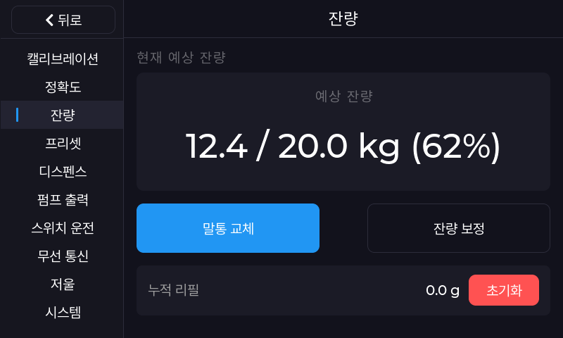
잔량 관리 화면 - 새 잔량을 확인합니다.
입력한 양이 용량과 잔량의 새 기준이 됩니다. 일부 사용한 말통이라면 이어서 잔량 보정으로 실제 남은 양을 맞춥니다.
표시 잔량을 맞출 때
잔량 보정을 누르고 현재 남아 있는 내용물의 양을 kg 단위로 입력합니다. 보충 후에도 현재 남아 있는 전체 양을 입력합니다.
리필 완료·취소와 보정 종료 시 사용량을 반영한 예상 잔량이 저장됩니다. 말통 교체와 잔량 보정도 저장됩니다. 표시값은 계산한 예상량이므로 실제 남은 양과 대조하고, 필요하면 잔량 보정으로 맞춥니다.
누적 리필 초기화
필요한 누적값을 따로 기록한 뒤 누적 리필 → 초기화를 누릅니다. 확인창에서 초기화를 선택하면 0으로 바뀌고, 취소하면 유지됩니다. 말통 잔량과 보정값은 유지됩니다. 저장된 누적값은 재부팅 후에도 유지됩니다.
보정·검증에 사용한 액체는 예상 잔량에서 차감될 수 있지만, 고객 리필 누적과는 집계 목적이 다릅니다. 재고와 거래 내역은 별도로 관리합니다.
고객 화면과 프리셋
홈 → 관리 → 디스펜스 / 프리셋
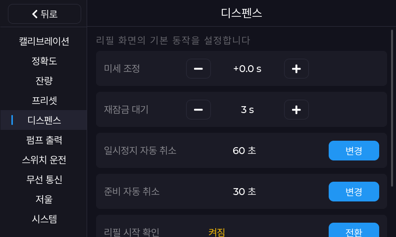
| 항목 | 설정의 의미 |
|---|---|
| 일시정지 자동 취소 | 일시정지 상태가 설정 시간을 넘으면 이번 리필을 취소합니다. |
| 리필 시작 확인 | 켜짐: 화면 탭 후 시작 확인 화면을 표시합니다. 꺼짐: 화면 탭으로 바로 시작합니다. |
| 준비 자동 취소 | 시작 전 준비량을 유지하는 시간입니다. 시간이 지나면 준비량을 해제합니다. POS 수신량과 화면에서 준비한 양에 적용됩니다. 기본 30초, 범위 1~3,600초입니다. |
| 재잠금 대기 | 리필 종료 후 다음 이용까지의 대기 시간입니다. 꺼짐이면 대기하지 않습니다. |
| 용량 / 채움 → 스와이프 조절 | 고객이 위·아래로 밀어 리필량을 바꿀 수 있는지 정합니다. |
| 용량 / 채움 → 단위 | 스와이프 한 단계마다 바뀌는 리필량입니다. |
| 용량 / 채움 → 최대 | 스와이프로 선택할 수 있는 최대 리필량입니다. |
| 용량 / 채움 → 채움 색상 | 리필 화면의 액체 색상을 바꿉니다. |
| 프리셋 → 디스펜스 | 고객 화면에서 기본으로 제시할 리필량입니다. |
| 프리셋 1~4 | 각 프리셋의 리필량입니다. 시간 모드에서는 펌프 작동 시간을 초로 정합니다. |
운영 전 고객 화면에서 리필량 조절 → 시작 → 일시정지 → 종료를 시험합니다. 기본량·최대량과 자동 취소·종료 대기도 확인합니다.
스위치 운전
홈 → 관리 → 스위치 운전
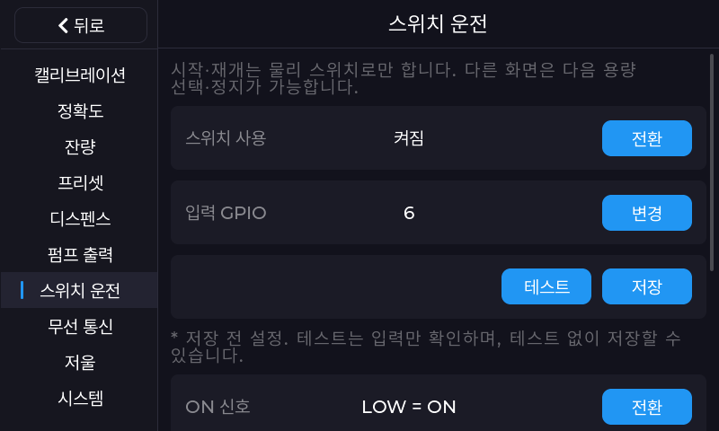
물리 스위치로 리필을 시작하고 재개합니다. 스위치 사용을 켜면 홈·프리셋·수동·디스펜스 화면에서 목표를 준비합니다.
- 입력 GPIO → 변경을 엽니다.
연결한 GPIO 번호를 입력합니다.
- ON 신호 → 전환을 누릅니다.
설치에 맞는 LOW = ON 또는 HIGH = ON을 선택합니다. 별표는 저장 전 설정입니다.
- 입력을 시험합니다.
선택 사항입니다. 테스트를 누르고 스위치를 조작해 ON/OFF 표시를 확인합니다. 펌프는 작동하지 않습니다. 마치면 종료를 누릅니다.
- 저장을 누릅니다.
- 스위치 사용을 켭니다.
현재 입력과 운전 상태를 확인합니다.
- 용기를 놓고 목표를 준비합니다.
홈·프리셋·수동·디스펜스 중 사용할 화면에서 준비합니다. 입력이 ON이면 먼저 OFF로 돌립니다.
- ON: 준비한 리필을 시작합니다.
- OFF: 진행 중인 리필을 일시정지합니다.
- 다시 ON: 같은 리필을 재개합니다.
- 화면의 정지: 이번 리필을 종료합니다.
- 완료·취소 후 OFF: 다음 이용을 준비합니다.
홈에서 시작한 운전은 홈의 펌프 정지로 끝냅니다. 무한 목표는 작업자가 직접 정지합니다.
펌프 출력과 연결
홈 → 관리 → 펌프 출력
기존 설치값을 기록합니다. 배선·구동 방식을 바꿀 때 설치 담당자가 확인한 값으로 설정합니다.
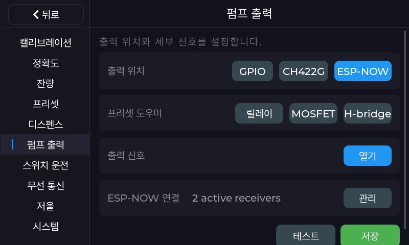
출력 위치와 신호
- 출력 위치를 선택합니다.
GPIO, CH422G, ESP-NOW 중 설치 구성에 맞는 방식을 고릅니다.
- 출력 신호 → 열기로 들어갑니다.
프리셋 도우미의 릴레이·MOSFET·H-bridge는 초기 설정값을 채웁니다.
- 신호와 패턴을 설정합니다.
신호 수, Signal A/B, 정지·정방향 등의 패턴을 설치 배선에 맞춥니다.
- 용기를 준비합니다.
다음 테스트는 실제 펌프를 작동시킵니다.
- 테스트를 누릅니다.
작동 방향을 확인합니다.
- 정지를 누릅니다.
펌프가 멈추는지 확인합니다.
- 저장을 누릅니다.
로컬 출력은 테스트에 성공해야 저장할 수 있습니다. 저장 결과를 확인합니다.
- 설정을 다시 엽니다.
저장값을 확인합니다. 출력을 바꿨다면 보정을 다시 점검합니다.
출력 신호 항목 읽기
신호 수 / Signal A·B는 사용할 제어 신호와 번호입니다. 정지·정방향·역방향 패턴은 각 상태에서 낼 신호를 정합니다.
PWM / 기본 듀티 / PWM 주파수는 해당 출력 구성이 지원하는 경우에만 사용합니다. 정상 토출 방향은 리필할 때의 방향, 방향 전환 대기는 방향을 바꾸는 사이의 정지 간격입니다. 지원하지 않는 동작이나 오류가 나오면 설치 구성을 확인합니다.
펌프 리시버 연결
- ESP-NOW 연결 → 관리를 엽니다.
등록된 리시버를 확인합니다.
- 리시버를 추가합니다.
검색에서 발견한 기기를 선택합니다. 수동 추가할 때는 설치 담당자가 제공한 식별값을 입력합니다.
- 리시버 이름을 정합니다.
현장에서 구분할 수 있는 이름을 사용합니다.
- 사용할 리시버를 켭니다.
사용할 리시버만 ON으로 둡니다.
- 펌프를 시험합니다.
해당 펌프가 실제로 작동하고 정지하는지 확인합니다.
전체 해제는 등록된 연결을 모두 지웁니다. 교체 작업에 필요한 경우에만 사용합니다.
제품 회수
역방향 회수가 가능한 설정에 제공됩니다.
- 홈에서 제품 회수를 누릅니다.
회수 모드가 열립니다.
- 회수 시작을 누릅니다.
경과 시간을 보며 작업합니다. 자동 종료 시간이 없으므로 자리를 지킵니다.
- 펌프 정지를 누릅니다.
작업을 마친 뒤 펌프 정지를 확인합니다.
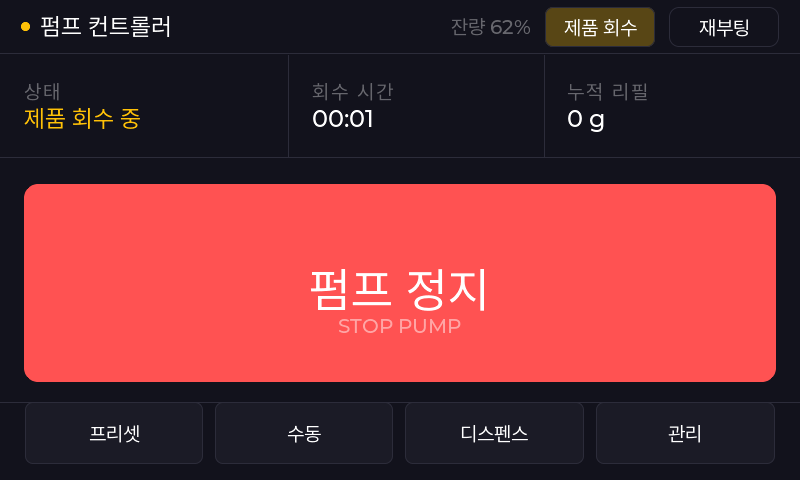
버튼이 보이지 않으면 현재 구성에서 제공되지 않는 기능입니다. 회수한 내용물의 재사용 여부는 제품의 위생·취급 기준에 따라 판단합니다.
시스템과 잠금
홈 → 관리 → 시스템
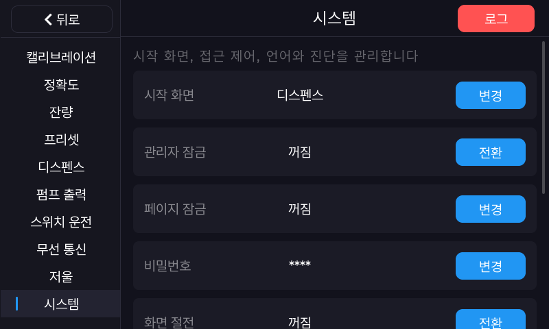
| 항목 | 설정의 의미 |
|---|---|
| 시작 화면 | 전원을 켰을 때 열리는 화면입니다. |
| 관리자 잠금 | 홈에서 관리 화면에 들어갈 때 비밀번호를 요구합니다. |
| 페이지 잠금 / 잠글 페이지 | 선택한 이용 화면에서 홈 등 다른 화면으로 이동하는 것을 제한합니다. |
| 비밀번호 | 관리자 접근에 사용하는 비밀번호를 변경합니다. |
| 화면 절전 / 절전 대기 | 유휴 상태에서 설정 시간 동안 조작이 없으면 백라이트를 끕니다. 대기 시간 범위는 1~1,440분입니다. |
| 언어 | 기기 화면의 한국어·영어를 전환합니다. |
| 메뉴 숨김 | 선택한 관리 항목을 메뉴에서 숨깁니다. 시스템 메뉴는 계속 표시됩니다. |
메뉴를 숨겨도 설정값과 접근 권한은 유지됩니다. 시작 화면과 잠글 페이지는 각각 지정합니다.
페이지 잠금 해제는 재부팅 전까지 유지됩니다. 고객용으로 다시 잠그려면 펌프를 멈추고 재부팅합니다. 시작 화면과 접근 제한을 확인합니다.
화면 절전 사용
첫 터치는 화면만 켭니다. 화면이 켜진 뒤 원하는 버튼을 누릅니다. 리필·보정·오류·OTA 작업 중에는 절전에 들어가지 않습니다.
공장 초기화
기기 설정을 지우고 다시 시작합니다.
- 필요한 값을 기록합니다.
설치값·보정값·잔량을 기록합니다.
- 공장 초기화를 누릅니다.
확인창의 초기화를 누르면 설정이 삭제되고 재부팅합니다.
- 운영 설정을 다시 준비합니다.
출력·보정·잔량·고객용 설정을 준비한 뒤 사용합니다.
제품 취급과 관리
노즐·튜브·제품
- 제품 표시사항에 맞는 용기와 부품을 사용하고 서로 다른 제품이 섞이지 않게 관리합니다.
- 노즐이 고객 용기의 내용물이나 오염된 표면에 닿지 않도록 배치합니다.
- 튜브가 눌리거나 꺾이지 않게 하고, 연결부 누출·변색·경화·갈라짐이 있으면 사용을 멈추고 점검합니다.
- 세척제, 농도, 온도, 세척 주기는 제품과 튜브·노즐 등 부품 공급자의 지침을 따릅니다. 임의의 용제나 고온 세척 조건을 적용하지 않습니다.
청소·교체 전후
- 리필을 종료하고 펌프 정지를 확인합니다.
튜브 분리나 부품 교체는 전원을 분리한 상태에서 합니다.
- 화면·전원부와 튜브·노즐을 구분해 청소합니다.
화면·컨트롤러·전원부에 액체를 직접 분사하거나 담그지 않습니다. 튜브·노즐은 해당 부품의 세척 지침을 따릅니다.
- 재연결 후 누출과 흐름을 확인합니다.
시험 리필과 정지를 확인한 뒤 실제 배출량을 점검합니다. 조건이 바뀌었다면 다시 캘리브레이션합니다.
누출, 타는 냄새, 비정상적인 발열 또는 정지하지 않는 출력이 있으면 사용을 중단합니다. 액체가 묻은 전원부는 만지지 말고, 현장 안전 절차에 따라 전원을 차단하고 점검 담당자에게 알립니다.
문제 해결과 로그
펌프를 정지합니다. 화면 문구와 발생 순서를 기록한 뒤 해당 항목을 확인합니다.
실제 리필량이 목표와 계속 달라요.
다음 순서로 확인합니다.
- 제품 흐름·튜브·노즐 상태
- 현재 선택한 보정과 프로파일
- 실측량의 단위와 빈 용기 제외 여부
- 미세 조정값
보정 검증과 디스펜스 시험 리필 결과를 비교합니다. 필요하면 같은 운영 조건에서 다시 보정합니다.
정밀값을 저장했는데 토출이 그대로예요.
원하는 프로파일을 확인하고 캘리브레이션 첫 화면에서 정밀 보정 사용을 누릅니다. 저장·조회 후에도 사용할 보정은 직접 선택합니다.
정밀 보정 사용 버튼이 비활성화되어 있어요.
선택한 프로파일에 저장된 정밀값이 있는지 확인합니다. 6회 실측 입력과 마지막 저장까지 완료해야 합니다. 다른 프로파일에 저장했다면 그 프로파일을 선택합니다.
정밀 측정을 중간에 멈췄어요.
측정 중 정지로 멈췄다면 완료된 이전 회차 기록을 확인하고 같은 회차를 다시 시작합니다. 뒤로/취소, 프로파일·시간 변경 또는 재부팅 후에는 6회를 처음부터 다시 측정합니다. 중단 회차의 양은 입력하지 않습니다.
보정 중 오류나 저장 실패가 나와요.
펌프가 사용 중인지, 출력 설정이 맞는지 확인합니다. 정밀 시간은 서로 달라야 하며, 보정 실측량은 0보다 큰 값이어야 합니다. 계산·저장 오류가 나면 기존 보정값이 유지됩니다. 오류를 해결한 뒤 실측량을 다시 확정하고 저장합니다. 저장됨 표시를 확인합니다.
리필을 시작할 수 없거나 액체가 나오지 않아요.
진행 중인 출력·보정·테스트가 끝났는지, 말통·튜브·노즐 상태가 정상인지 확인합니다. 펌프 출력 위치와 활성 리시버, 현재 사용할 보정이 준비됐는지 확인합니다. 정지가 되지 않으면 고객 사용을 중단하고 현장 안전 절차를 따릅니다.
설정 메뉴가 사라졌어요.
관리 → 시스템 → 메뉴 숨김에서 해당 항목이 선택되어 있는지 확인하고 선택을 해제한 뒤 저장합니다. 시스템 메뉴는 숨겨지지 않습니다.
재부팅 뒤 잔량이 맞지 않아요.
리필 종료 시 예상 잔량이 저장됩니다. 강제 전원 차단이나 실제 재고와의 차이가 있다면 남은 양을 확인하고 관리 → 잔량 → 잔량 보정으로 맞춥니다.
로그와 점검 요청
홈 → 관리 → 시스템 → 로그에서 최근 메시지를 확인합니다. INFO는 일반 정보, WARN은 주의, ERROR는 오류 메시지입니다. 점검에 필요한 메시지를 기록한 뒤에만 삭제합니다.
점검 요청에는 기기 버전, 발생 시각, 직전 조작, 화면 오류, 사용 제품, 목표량과 실측량, 선택한 보정·프로파일, 최근 변경한 설정을 함께 전달합니다. 비밀번호는 보내지 않습니다.
네트워크와 Web 관리
홈 → 관리 → 무선 통신
기기 화면에 표시된 연결 상태와 주소로 Web 관리 화면에 접속합니다.
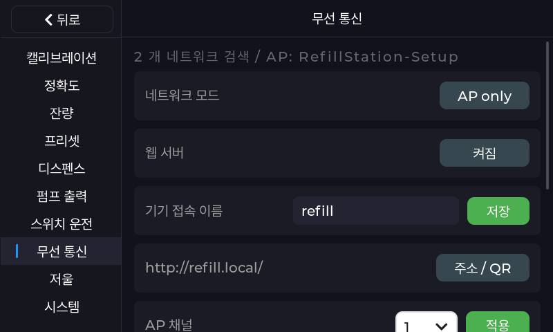
공유기에 연결하기
- 네트워크 모드를 선택합니다.
공유기 접속을 사용하는 모드를 고릅니다.
- 스캔을 누릅니다.
목록에서 매장 네트워크를 선택합니다.
- 연결 정보를 입력합니다.
SSID와 비밀번호를 확인합니다.
- 저장을 누릅니다.
무선 통신 화면으로 돌아가 연결 상태를 확인합니다.
- 접속할 휴대전화나 컴퓨터를 준비합니다.
기기에 접속할 수 있는 네트워크에 연결합니다.
- 주소 / QR을 엽니다.
표시된 주소 또는 QR로 접속합니다. AP 접속에도 화면에 표시된 정보를 사용합니다.
- 해제: 저장된 공유기 연결 정보를 지웁니다.
- Wi-Fi 끄기: AP와 공유기 연결을 끕니다.
- Wi-Fi 켜기: Wi-Fi를 다시 켭니다.
리시버 통신은 유지됩니다. 변경 후 해당 펌프의 작동과 정지를 확인합니다.
기기 접속 이름과 웹 서버
- 기기 접속 이름을 입력합니다.
여러 기기는 서로 다른 이름으로 구분합니다.
- 저장을 누릅니다.
- 주소 / QR을 엽니다.
새로 표시된 주소를 사용합니다.
- 웹 서버를 켭니다.
Web 화면에 접속할 수 있습니다. 꺼도 Wi-Fi와 펌프 리시버 연결은 유지됩니다.
Web 관리 화면 열기
- 기기 주소를 브라우저에서 엽니다.
표시된 기기 주소를 열면 관리자 로그인 또는 관리 화면으로 연결됩니다. 필요하면 주소 뒤에 /admin을 붙여 엽니다.
- 관리자 비밀번호로 로그인합니다.
로그인 화면 또는 상단 관리자 로그인에서 인증합니다. 기기의 관리자 비밀번호를 사용하며 POS 관리 사이트 계정과는 별도입니다.
- 필요한 설정을 변경합니다.
현재 상태를 확인한 뒤 값을 입력합니다.
- 해당 항목의 저장을 누릅니다.
결과 메시지를 확인합니다.
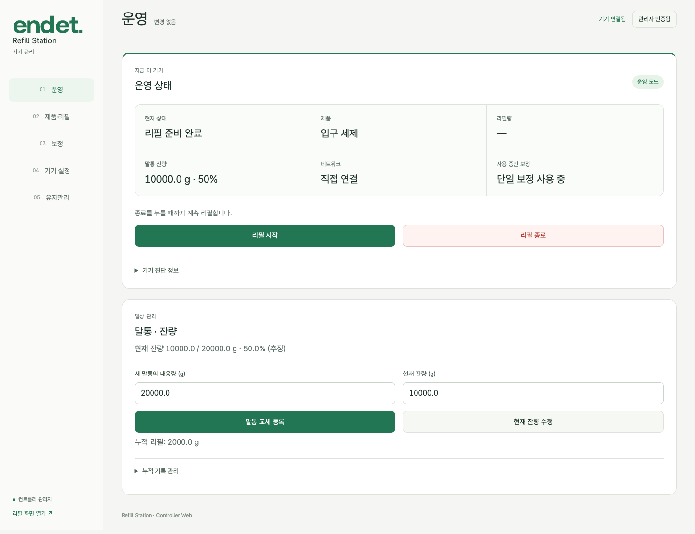
| 메뉴 | 기능 |
|---|---|
| 운영 | 현재 상태·잔량·사용 보정을 확인하고 펌프를 시작하거나 정지합니다. |
| 운영 → 말통 · 잔량 | 말통 교체 등록은 새 말통의 내용량을 등록합니다. 현재 잔량 수정은 남아 있는 양을 변경합니다. |
| 제품·리필 | 제품명·설명·표시 금액, 리필 기준·프리셋·리필 설정을 변경합니다. 표시 금액은 고객 안내용입니다. |
| 보정 | 보정값을 측정·저장하고 리필에 사용할 보정을 선택합니다. 현재 보정을 검증하고 기록을 관리합니다. |
| 기기 설정 | 출력·연결·잠금·화면 절전·스위치·네트워크·POS 연결을 설정합니다. |
| 유지관리 | 기록 조회, 펌웨어 업데이트와 점검을 제공합니다. |
Web에서 리필할 때는 용기를 놓고 리필 시작을 누릅니다. 작동 시간 제한이 없으므로 리필 종료로 직접 멈춥니다.
Web에서 말통 교체 등록이나 현재 잔량 수정을 할 때는 화면의 g 또는 mL 단위로 내용물 양을 입력합니다.
설정 모드·복구·명령 실행은 점검 담당자의 지시에 따라 사용합니다.
Web에서 네트워크 설정하기
Web 관리 → 기기 설정 → 네트워크
- 연결 정보를 입력합니다.
연결 방식과 공유기 정보를 입력합니다.
- 연결 설정 저장을 누릅니다.
- 저장한 설정 적용을 누릅니다.
현재 연결을 저장한 설정으로 전환합니다.
- 새 주소로 다시 접속합니다.
적용 후 표시된 주소를 사용합니다. 연결 상태를 확인합니다.
OTA 펌웨어 업데이트
Web 관리 → 유지관리 → 펌웨어 업데이트
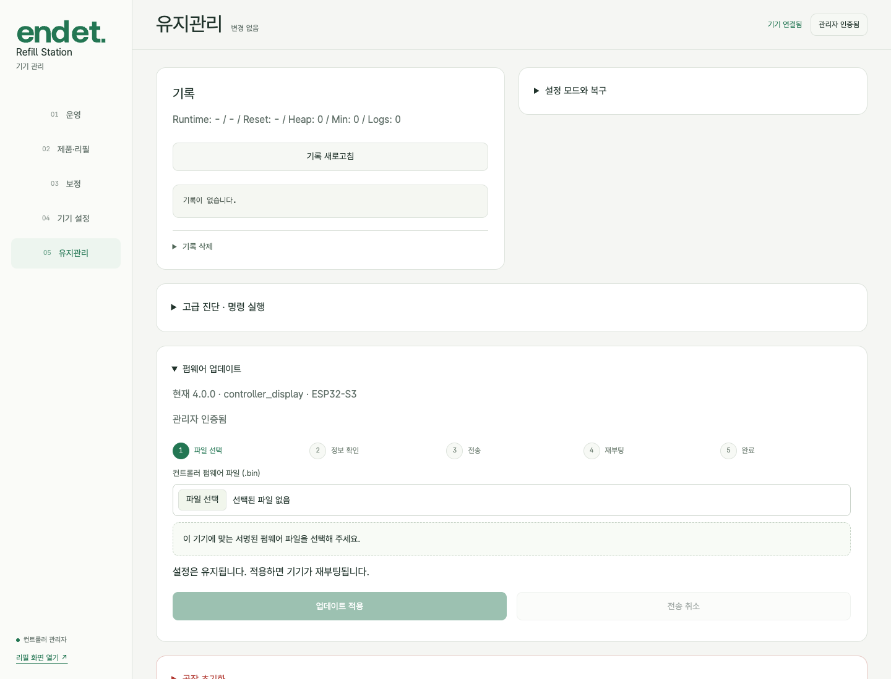
- 진행 중인 리필을 끝냅니다.
펌프 정지를 확인합니다.
- 기기에 맞는 파일을 준비합니다.
공식 컨트롤러 패키지의 서명된 .bin을 사용합니다. 제품·보드·구성을 확인합니다.
- 전원과 연결을 준비합니다.
안정적인 전원과 네트워크를 사용합니다.
- 관리자 인증 후 펌웨어 업데이트를 펼칩니다.
컨트롤러 펌웨어 파일을 선택합니다.
- 대상과 버전을 확인합니다.
대상 불일치나 오류가 나오면 적용하지 않습니다.
- 업데이트 적용을 누릅니다.
전송·적용 중 전원을 유지합니다. 설정을 유지한 채 재부팅합니다.
- 재연결과 완료 표시를 기다립니다.
정상 부팅 확인과 완료 표시를 확인합니다.
- 업데이트된 화면 열기를 누릅니다.
새 버전과 운영 설정을 확인합니다.
업데이트가 실패했거나 연결이 돌아오지 않아요.
화면 오류와 진행 단계를 기록합니다. 기기의 전원·네트워크와 주소를 확인하고 같은 파일을 반복 적용하기 전에 점검 담당자에게 문의합니다. 임의의 파일이나 다른 제품의 펌웨어를 적용하지 않습니다.
POS 연결과 준비된 리필
POS에서 리필량을 기기로 전달할 수 있습니다. 지원 모델에 POS 연결 메뉴가 표시됩니다. POS를 사용하지 않을 때는 POS 사용을 끄고 기기의 일반 리필 기능을 사용합니다.
홈 → 관리 → 무선 통신 → 하단 POS 연결
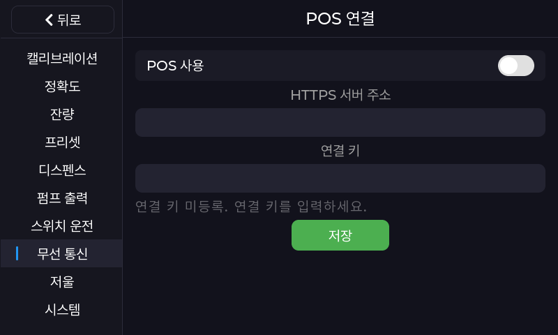
처음 연결하기
- 매장과 기기를 등록합니다.
POS 등록·사용·테스트 안내에 따라 POS 관리 사이트에서 매장과 기기를 등록하고 연결 정보를 준비합니다.
- 기기의 POS 연결에 정보를 입력합니다.
HTTPS 서버 주소와 해당 기기의 연결 키를 입력합니다. 연결 키 등록됨이 표시되면 입력을 비워 두어 기존 키를 유지할 수 있습니다.
- POS 사용을 켭니다.
- 저장을 누릅니다.
POS 대기 화면으로 돌아갑니다.
- 연결 시험으로 준비량을 확인합니다.
저장 후 POS 대기 화면에서 리필량 수신을 기다립니다. POS 안내의 시험 순서에 따라 소량을 전송하고, 수신되면 준비 화면과 목표량을 확인합니다. 연결 키는 공개하거나 점검 요청에 포함하지 않습니다.
Web에서 POS 연결 설정하기
Web 관리 → 기기 설정 → POS 연동
- POS 모드 사용을 켭니다.
- 서버 주소와 기기 연결 토큰을 입력합니다.
HTTPS 서버 주소를 사용합니다. 등록된 토큰을 유지하려면 토큰 입력을 비워 둡니다.
- POS 설정 저장을 누릅니다.
서버 연결 상태를 확인합니다.
- 준비된 리필량을 확인합니다.
POS 안내의 연결 시험으로 리필량을 전송한 뒤 확인합니다.
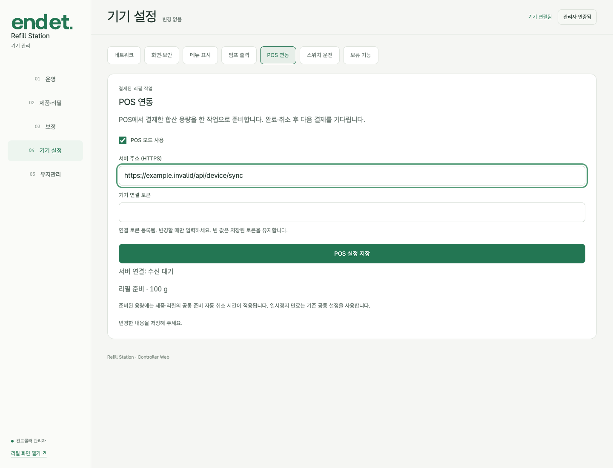
준비된 리필 이용하기
- 기기에 표시된 목표량을 확인합니다.
POS에서 받은 양은 시작 전 준비량입니다. 펌프는 시작 조작을 한 뒤 작동합니다.
- 용기를 놓고 시작합니다.
일반 운전에서는 화면의 리필 시작을 누릅니다. 스위치 운전이 켜져 있으면 물리 스위치로 시작합니다. 취소하려면 준비 화면의 취소를 누릅니다.
- 리필을 마칩니다.
리필에는 기기에 선택한 보정과 리필 설정이 적용됩니다. 완료 또는 취소 후 다음 이용을 준비합니다.
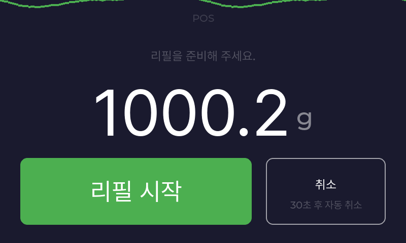
시작하지 않은 준비량은 관리 → 디스펜스 → 준비 자동 취소의 설정 시간이 지나면 해제됩니다. 만료된 리필량이 다시 필요하면 POS 안내에 따라 확인·재준비합니다. 기기의 준비 취소는 결제 취소가 아닙니다. 결제·매장·계정·상품 관리는 POS 안내에서 확인합니다.